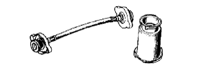
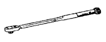

トランスアクスルケース オイル シール NO.2（U340F） 準備品 【取り付け】
 | 09316-60011 | トランスミッション ＆ トランス ファーベアリングリプレーサー |
 | (09316-00011) | リプレーサーパイプ |
 | 09670-00010 | フロントクロスメンバ- ガイドツ-ル |
 | 09772-30010 | ＣＣＫゲージ用コンペンセータ |
 | 09843-18030 | タコパルスピックアップワイヤ No.２ |
 | 09843-18040 | ダイアグノーシスチェックワイヤ No.２ |
 | 09950-60010 | リプレーサーセット |
| (09951-00390) | リプレーサー 39 | |
 | 09950-70010 | ハンドルセット |
 | (09951-07200) | ハンドル 200 |
 | 09991-70200 | ＴａＳＣＡＮ セット |
 | 09011-12301 | ソケットレンチ（30mm）２重６角 |
| 09032-00020 | タガネ |
| ブレーキペダルプレッシャー | ||
| トルクレンチ | ||
| ノギス（0-200mm） | ||
| キャンバーキャスターキングピン ゲージ | ||
| ターニングラジアスゲージ | ||
| トーインゲージ | ||
| 回転計 | ||
| 直定規，プッシュプルゲージ | ||
 | 95506-00090 | ベルトテンションゲージ （デンソー品番）95506-00090 (株)デンソー扱い |
 | RCT-2A | ラジエ-タ-キャップテスタ- (株)バンザイ扱い |
 | RCT-2A-30S | ラジエ-タ-キャップテスタ- アダプターセットＡ (株)バンザイ扱い |
 | RCT-2 | ラジエーターキャップ テスター (株)イヤサカ扱い |
|  | RCT-2-AST | ラジエーターキャップ テスター アダプターセットＡ (株)イヤサカ扱い |
 | TL-12C | タイミングライト (電流検出タイプ) (株)イヤサカ扱い |
|  | QL-100N | QLトルクレンチ（100N) (株)バンザイ·(株)イヤサカ扱い |
| QL-200N | QLトルクレンチ（200N) (株)バンザイ·(株)イヤサカ扱い | |
| QL-25N | QLトルクレンチ（25N) (株)バンザイ·(株)イヤサカ扱い | |
| QL-280N | QLトルクレンチ（280N) (株)バンザイ·(株)イヤサカ扱い | |
| QL-50N | QLトルクレンチ（50N) (株)バンザイ·(株)イヤサカ扱い | |
| EL-400H | エンジンリフター (株)バンザイ扱い | |
 | EL-400 | エンジンリフター (株)イヤサカ扱い |
| トヨタ純正 ＭＰグリースNo.２ | ||
| トヨタ純正 オートフルード タイプＴ-IV | ||
| トヨタ純正 スーパーロングライフ クーラント | ||
| トヨタ純正 エンジンオイル | ||
| 木片 |